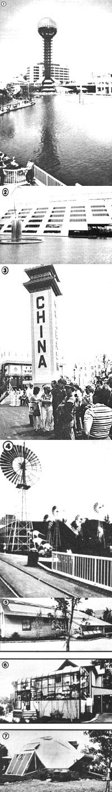

Only a "simple Simon" would willingly pass up a chance to combine education and pleasure.
Now that the summer's in full swing, it seems only fitting that we tell you a little about one of the most impressive events to come to MOTHER's home area in quite some time: The 1982 World's Fair!
The Knoxville, Tennessee exhibition-located just a short hop over the Great Smoky Mountains from this publication's hometown in Hendersonville, North Carolina-opened its gates on May 1 and will remain in operation through October 31 of this year. And though the site itself is somewhat small by previous World's Fair standards (its 72-acre layout simply serves to keep all the displays within easy walking distance of one another), the fair is still one of the largest international exhibits to be held in the United States in the past four decades.
The theme for the exposition is "Energy Turns the World", and the fair's organizers would have been hard pressed to choose a more vital topic. In order to stress the importance of developments in that field-both the breakthroughs of the past and those that have yet to be made-the exhibitors have attempted to incorporate energy-related displays into their presentations . . . or, like the United States, have designed structures which themselves symbolize the energy theme while housing smaller exhibits. (The six-story cantilevered U.S. pavilion uses 5,000 square feet of solar collector surface to power its air conditioning and water-heating systems.)
Other international exhibits include the Australian solar and wind energy display, a presentation of alternative energy hardware from the People's Republic of China (along with an actual section of the famous Great Wall, some historical artifacts, and various works of art), Japan's industrial robotics, and the European Community's exhibition of that group's sponsored energy projects.
Of course the corporate displays address the energy theme, as well, and some of the areas of interest represented are alternate fuels, automotive design, computer sciences, laser technology, communications, and petroleum research.
In addition to energy-related demonstrations, there are such highlights as musical and folk entertainment, a sports Hall of Fame, theater and singing performances, a personal health exhibit, and several genuine beer gardens . . . not to mention wandering mimes, musicians, and jugglers who perform for the benefit of casual viewers.
Probably of special interest to MOTHER-readers are the model residences that incorporate energy-saving display features. One Victorian-era house, for example, has been retrofitted to drastically reduce power consumption, using readily available consumer products . . . and another has been restored to serve as a display area and "clearing house" for alternative energy information.
In contrast, "Today's Solar Home" and the "Home of the Future" are newly built structures that demonstrate-through the use of active and passive solar collectors, photovoltaics, sound conservation and insulation techniques, and effective planning-how residences might be designed to make the best use of both natural and conventional energy.
So, now that you know what's waiting for you, what are you waiting for? The 1982 World's Fair offers a rare opportunity to combine an international learning experience with the beauty and pleasure of a holiday in western North Carolina/eastern Tennessee's mountain vacationland.
EDITOR'S NOTE: For information on a unique way to visit the exposition, turn to page 47.
|
 [1] The Sunsphere. [2] The U.S. pavilion. [3] A wandering magician. [4] ""Aussie"" wind power. [5-7] Solar treatments. |
|
|